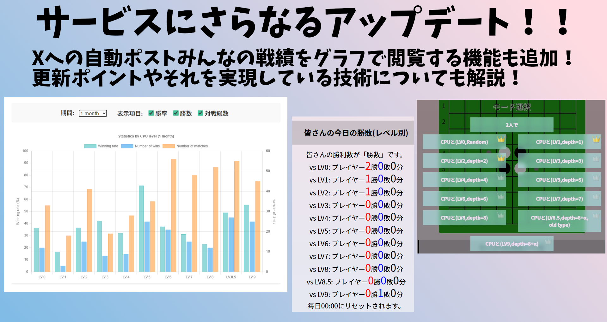
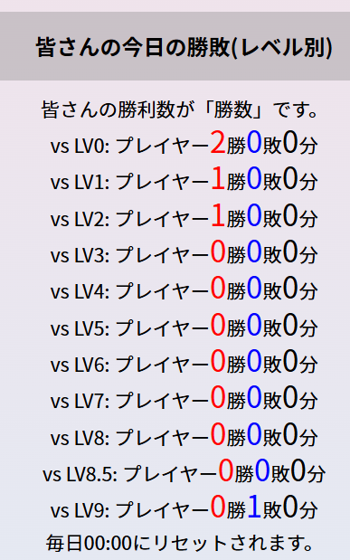
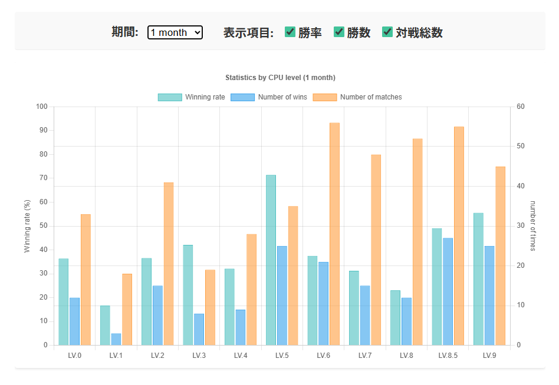
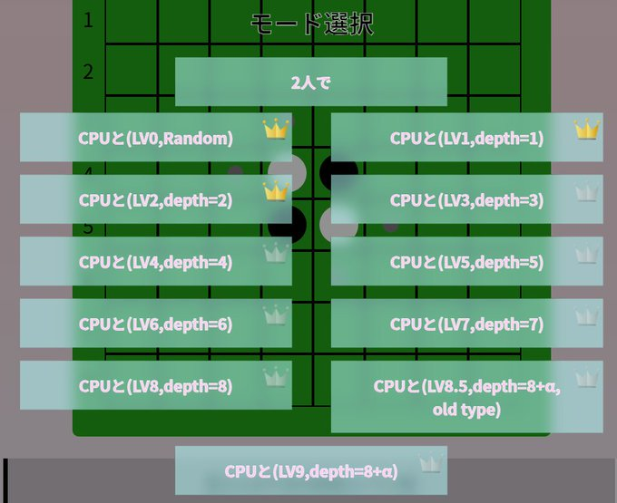

今回はサイトなどににいくつかのアップデートを行いました。
今回はその内容の紹介と、それを実現した技術の話も簡単にしたいと思います。


こちらは以下のオセロ対戦サイトに関するアップデートです。
オセロの盤面の下方に、その日のレベル別の戦績を表示できるようになりました。
他の人はどんなレベルに挑戦していて、どのような成績をおさめているのかを知ることができるようになります。
自分の立ち位置を把握して、さらなる実力アップのモチベーションをあげていきましょう！

先ほど紹介したその日の戦績を確認する機能に加え、1日～3ヶ月の期間のCPUレベル別の皆さんの戦績を確認できるようになりました。
具体的には「期間」と「表示項目」を選択していただくとその内容が棒グラフとして下部に表示されるというものです。
「期間」については、1日、3日、1週間、2週間、1ヶ月、2ヶ月、3ヶ月からの選択が可能で、
「表示項目」については勝率、勝敗、対戦総数の表示の可否を選択していただけます。
それぞれの選択項目は選んだそばから反映されるお手軽仕様です！
ぜひ、こちらの機能も活用して他のユーザーの対戦成績を確認してみましょう！！
これらを体験できるページはこちら↓

さらに、オセロ対戦サイトにおいて、今までに勝利したことがあるレベルの選択ボタンの右上に王冠が表示されるようになりました。
これにより、自分が成長してきた記録を残すことが可能となり、実力アップのモチベーションが上がること間違いなしです！
e-Coach_AIのXにて、このように↓毎朝7時に前日の皆さんの戦績をポストするようになりました。
このアカウントでは他にもアップデート情報の配信など、様々な活動を行っていますので、是非フォローお願いします！おはようございます！
— e-Coach_AI-オセロ (@e_Coach_AI) November 8, 2025
昨日のAIと皆さんの対戦成績です！(Lv.0~Lv.3)
2025/11/08
vs Lv.0: プレイヤー1勝0敗0分
vs Lv.1: プレイヤー0勝0敗0分
vs Lv.2: プレイヤー0勝0敗0分
vs Lv.3: プレイヤー0勝0敗0分#オセロ https://t.co/sIddSUw71T
さて、せっかくなので軽めに技術的な話もしておきましょう。
今まではなかったこれらの機能をなぜ急にいくつも実装することができたのでしょうか？
それは、データベースを使うようになったからです。
データベースとは、構造化されたデータをルールにしたがって整理、保存し、管理できるというものです。
めっちゃくちゃ砕いて言うと、インターネット上にあるエクセルファイルみたいな感じですかね？
エクセルでは例えばVLOOKUPなどで条件に当てはまるデータを抽出して来たりしますが、データベースも同じで、そんな調子でデータの検索や抽出がしやすいのです。
今回は、データベースに日ごとのレベル別の戦績を記録し、皆さんがサイトにアクセスしたときに皆さんのデバイス(ブラウザ)がそのデータベースに保存されているデータを取得して画面に表示しているのです。
また、皆さんとCPUの対局が終わった時には、そのレベルと結果をデータベースに送信して値を更新しているのです。
加えて、皆さんのデバイスのIDとレベル別の初勝利時期もデータベースに記録することで、そのレベルに勝利したことがあるかどうかを判別していたのです。
そしてこれは裏話なのですが、ユーザーの皆さんがレベル8以上のCPUに勝利した場合はその棋譜もデータベースに保存されます。これは私の研究資料のためです。是非私の更なるAI強化のためにも高いレベルに挑戦できるように頑張ってください！
また、Xでの自動ポストについては、毎日朝7時にサーバーで自動的にプログラムを実行し、そのプログラムの処理の内部でデータベースにアクセスし、前日の戦績を取得し、ポスト文を作成、そしてポストしているのです。
いかがでしたでしょうか？
今回のアップデートにより、よりユーザーの皆さんがオセロの実力アップにつながりやすい環境を作ることが出来たと考えています。
我々が提供する「e-Coach_AI」を今後ともよろしくお願いします。
次の記事↓
前回の記事↓
© 2025 ЯAMUNE